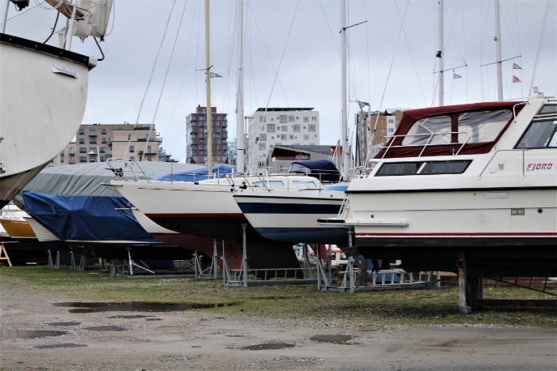

AARHUS
Denmark
Find The Hidden Gems in Aarhus
Learn About Aarhus
Aarhus is the second largest
city in Denmark. The city has
an estimated population of
285,273 as of 2022. Aarhus
goes back to at least the late
8th century and is one of the
oldest towns in Denmark.
Best Restaurant in
Town
where to eat in an unfamiliar
city. We have collected five
delicious eating places that are
a must when visiting Aarhus.

Hidden Places in Aarhus
